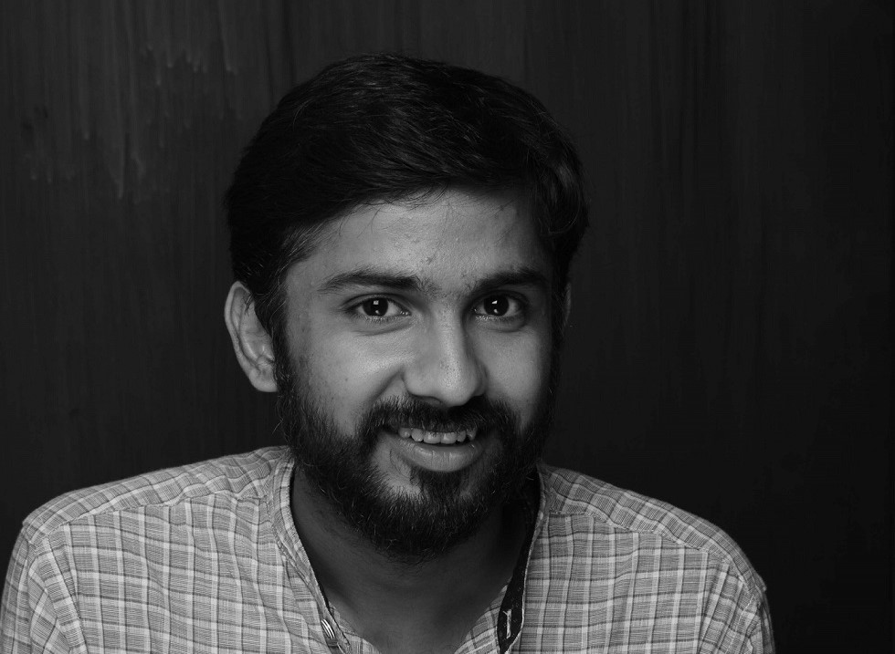

Currently, pursuing Masters in Design in New Media Design from NID. I have done B.Tech in Mechatronics, graduated in 2014 U.V.Patel College of Engineering. Gujarat. My schooling is done in my native city Junagadh, Gujarat. I was inclined towards engineering and design from childhood due to my family background. I was spending time in the workshop and with the machine during school time which gave me knowledge of practical learning. I believe it is the core of my learning. No work is small for me. I have learnt everything came to me. My skills are ranging from masonry work to highly sophisticated technology development. From all of the experience, I learnt to see things from 20,000 feet height (Holistically).
I started doing projects from the first year of my engineering. We participated in international events like ABU Robocon for 2 years. I served the team as Mechanical team head. We stand 12th and 17th among more than 100 national teams (including IITs and NITs) 2014 and 2013 respectively. We also won 'Best Rookie Award'.
I worked for two years as an Industrial Designer as well as Integration Engineer at Zenn Systems. They are basically for the nuclear industry. Meanwhile, I have designed two commercial products which are in the process to come to market. Where I was looking the products from the conceptualizing to manufacturing. I have made hand sketches to mold 3D models. It gave me whole experience of product making and development processes.
As a responsible son, I am helping my father to design products for our family business. We are the maker of the hand-carved wooden temple. you can check out the work.
Under the influence of AIREP (All India Rural Empowerment Program), we have started a collegiate education movement known as 'GVM'(Ganpat Volunteaching Movement) where we go to teach nearby village students every Sunday. This movement was started by around 10 students (including me) in 2013. Now, in 4 years, this movement has spread across 9 villages and more than 100 'VolunTeacher' go-to tech every Sunday. I am still part of this movement.
Dr Jignesh Khakhar, Course co-ordinator, New Media Design, NID
khakharj@nid.edu
Parag Taktawala, Owner of Zenn Systems
pkt@zennsystems.com
Ravin Vyas, Founder of Avboadh Foundation
ravinvyas@gmail.com
Hiral Mehta, Founder of Volunteaching Movement
rashtrayog@gmail.com
Kumar Chauhan, Artist
kumarchauhan.art@gmail.com